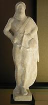

LA NAISSANCE DE LA LYRE
Je passais.
Carapace hébergeant du silence,
Elle flairait la boue, ignorait le chemin,
Réceptacle des nuits, si caverne demain,
Plus semblable au caillou qu'à tout être qui pense.
J'extirpai le boyau dont s'encombrait sa panse,
Je dérobai son os sous l'or et le carmin,
Puis je tendis sept nerfs qui vibrant sous ma main
Furent la source d'où la musique s'épanche.
Où le jour n'abordait je fis lever le son.
La voûte s'élargit, répéta ma leçon,
Fut clarté, firmament, simulacre du monde.
Vide de toi, pareille à ce caillou méchant,
Et ne laissant régner que le mot qui féconde
Sois la grotte vivante où s'engendre le chant.
Michel Galiana (c) 2006
|

|
THE BIRTH OF THE LYRE
I Passed
A carapace harbouring sheer silence,
It smelled of mud and silt, motionless on the path,
A shell where nights gather, if not a cenotaph,
Evoking thoughtless stone more than intelligence.
I pulled out the entrails that filled its paunchy skin,
I removed all the bones from the gold-crimson case,
I tightened seven guts my hand prompted to wave
Making of them a source from which music would spring.
There where light never gets I have caused tones to rise
And the shell enlarged, echoed to memorize,
Became a lucid vault simulating the world.
Devoid of self you were, like this stone, rough and wrong:
But as far as in you sound only fruitful words,
Be the living cave where begets itself the song.
Transl. Christian Souchon 01.01.2006 (c) (r) All rights reserved
|